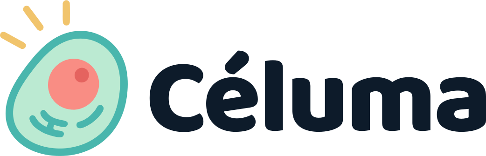
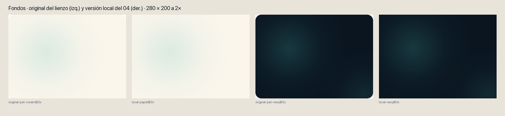
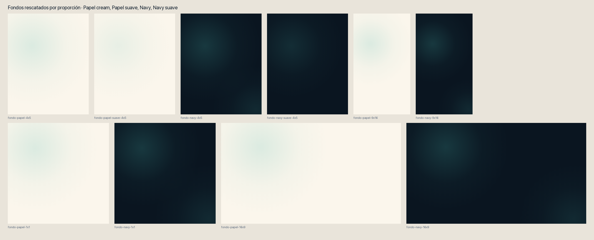
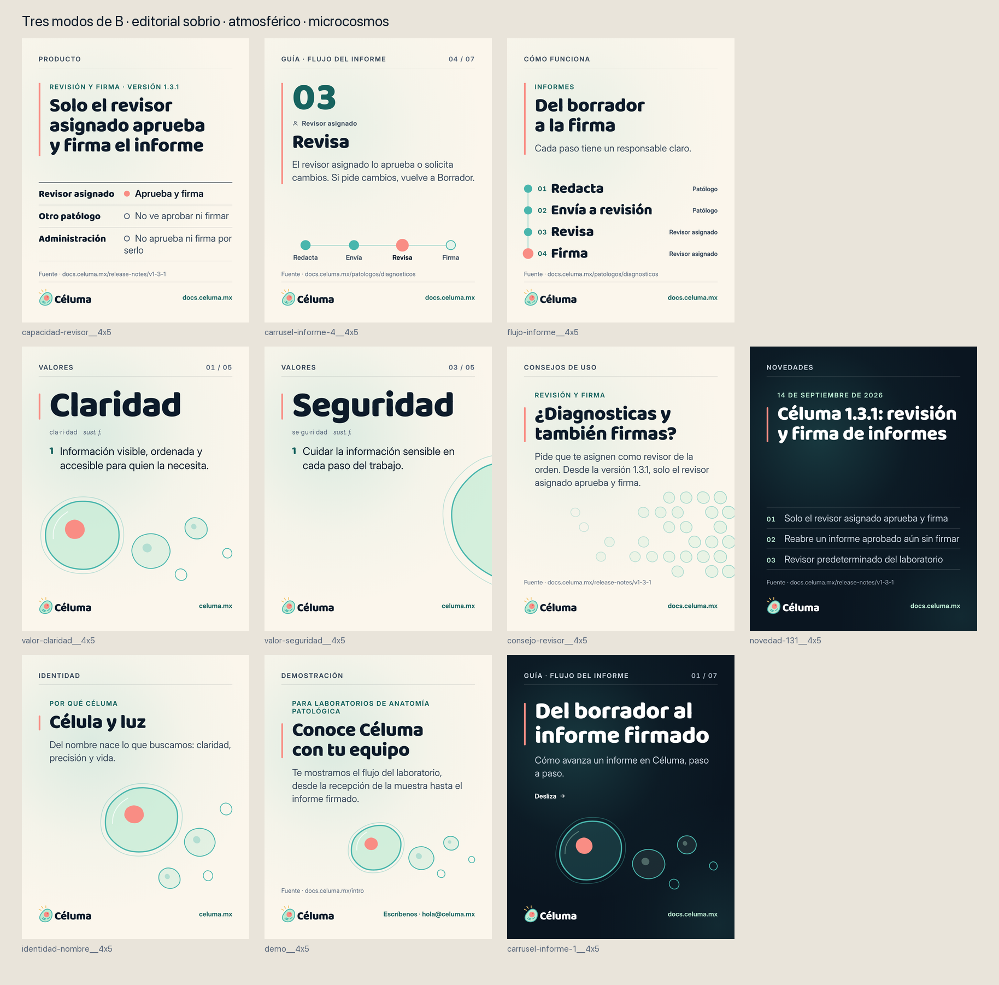
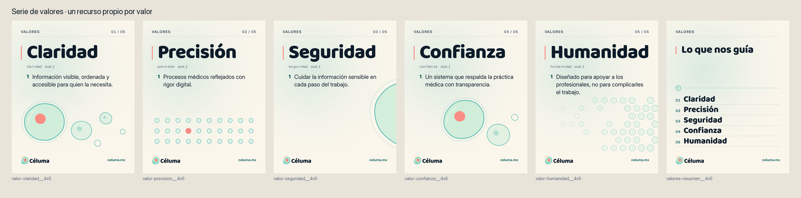
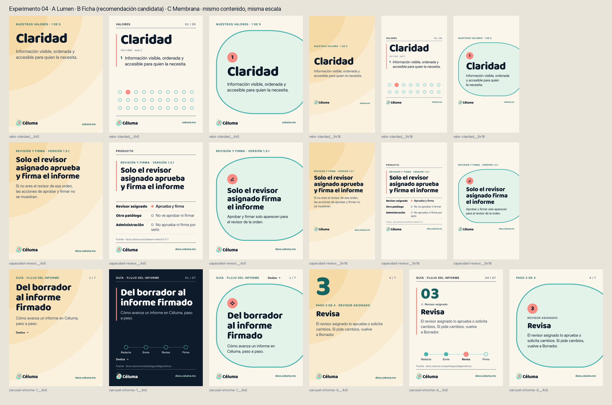
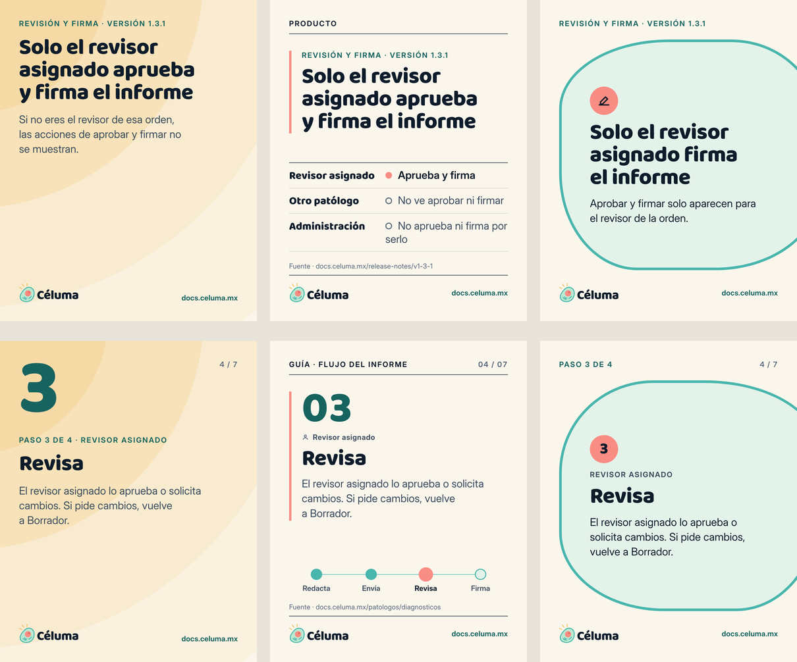
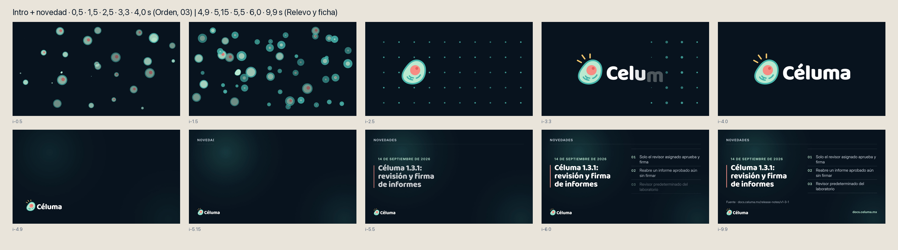

Experimento 04 · exploración · segunda ronda (refinamiento de B)
Identidad y materiales digitales
Un sistema visual alrededor del logo aprobado en el experimento 02 y del motion aprobado en el 03, para publicaciones y comunicación digital. Tres direcciones comparables con el mismo contenido, una recomendación candidata desarrollada como kit reutilizable, sus archivos y la evidencia de revisión.
1
Intención y base
Céluma ordena el trabajo del laboratorio de anatomía patológica. Su comunicación debe sentirse profesional, biomédica, cálida y humana: información sensible tratada con precisión y respeto por quien la trabaja.
Conservar
- Logo de 02: maestro, paleta aprobada y lockup A · Baloo 2 800, siempre completos.
- Crema como papel, navy como tinta, teal con texto navy.
- La regla salmón del
PageHeaderde la app. - Calma del motion de 03 y reposo exacto.
Evolucionar
- Una sans de texto con licencia para piezas exportadas (candidata: Inter).
- Tintas de apoyo medidas para crema, menta y navy.
- Recursos propios de célula + luz que no recortan el logo.
- Plantillas con presupuesto de texto y versión condensada.
Falta decidir
- Dirección del sistema (A, B o C).
- Sans de texto (D-12) y tintas locales como tokens.
- Canal para demostraciones y descriptor (D-8).
- Revisión por medio antes de publicar.
Base aprobada que no cambia


Los valores como decisiones que se pueden revisar
| Valor | Decisión observable | Dónde comprobarlo |
|---|---|---|
| Claridad | Un mensaje por pieza; cabecera de serie que dice qué colección es; texto de apoyo ≥ 16 px a 390 px; contraste medido 16/16. | Cabecera, presupuesto de líneas, tabla de contraste |
| Precisión | Márgenes, tipografía y módulo derivados de S y W; cuadrícula en celdas enteras; anatomía igual en cinco proporciones; cada afirmación de producto cita su página publicada. | Retícula, línea «Fuente ·», comprobación automática |
| Seguridad | Sin sellos ni promesas de cumplimiento; datos sintéticos; capacidades pendientes excluidas del material externo; colores de estado clínico fuera de la marca. | Registro de afirmaciones, usos correctos |
| Confianza | Una estructura estable para todas las plantillas; composición sobria; el motion termina idéntico a la pieza estática; nada se anima para «confirmar» resultados. | Kit, final = estático |
| Humanidad | Crema cálido y Baloo en titulares; el responsable de cada paso nombrado («Revisor asignado»); tú cercano y concreto; sin mascotas, sin infantilizar. | Carrusel, voz |
2
Tres direcciones con el mismo contenido
Las tres respetan el logo, la paleta y el lockup A. Difieren en composición, lenguaje editorial y recursos. Mismo contenido verificado, mismos formatos y misma escala.
Comparación de la ronda 1: la columna B es la Ficha anterior al refinamiento (antecedente). La B refinada está en el capítulo 4. El carrusel solo se diseñó en 4:5; con 9:16 seleccionado, sus dos láminas se mantienen en 4:5. «Feed» es una maqueta neutra a 390 px, no la interfaz de ninguna red social.
3
Recomendación candidata: B · Ficha
Argumento de la ronda 1. Rafael pidió refinar B (ronda 2): ver el capítulo 4. Ni la ronda 1 ni la 2 están aprobadas.
Recomendación provisional de Claude para revisión, no aprobada. Las alternativas A y C se conservan completas para comparar.
Por qué B
- Hace visible la precisión. Retícula, reglas finas, índice y la fuente citada en la propia pieza convierten un valor en algo que se ve, no en un adjetivo.
- Escala a la información real. Guías, novedades, permisos y flujos caben sin forzar: el rastreador de pasos y la tabla de permisos explican mejor que una ilustración.
- Habla el idioma del producto sin copiarlo. La regla salmón viene del
PageHeader; los pasos recuerdan al flujo real sin usar los colores de estado de la app; la cuadrícula es el «Orden» del 03. - Es cálida sin infantilizar. Papel crema, Baloo en titulares y frases en segunda persona; navy solo puntúa portadas, cierres y anuncios.
- Es honesta por construcción. No necesita capturas, cifras ni fotos para funcionar; cada capacidad lleva su página publicada.
Riesgos y cómo se mitigan
- Puede volverse fría o repetitiva. Ritmo crema/navy, módulos distintos según el contenido (cuadrícula, rastreador, tabla, lista) y titulares en Baloo.
- Metadatos pequeños. Son terciarios (≈ 10,5 px a 390 px); el mensaje principal nunca baja de 16 px.
- Si se pierde la disciplina de fuentes, pierde su razón de ser. La línea «Fuente ·» solo aparece con una página publicada.
Qué aporta cada alternativa
- A · Lumen es la más cálida y la más cercana a «célula + luz»; útil como referencia para piezas de marca puntuales. Pierde estructura con contenido denso.
- C · Membrana es la más reconocible a distancia, pero compite con el propio logo y se acerca a un tono de sticker.
| Criterio | A · Lumen | B · Ficha | C · Membrana |
|---|---|---|---|
| Jerarquía y lectura a 390 px | Clara; mucho aire | Clara; cabecera + regla guían | Clara dentro del contenedor |
| Contenido denso (pasos, permisos) | Débil: sin módulo propio | Fuerte: rastreador, tabla, lista | Media: el contenedor limita |
| Coherencia entre cinco formatos | Buena | Muy buena: misma anatomía | Media: la forma cambia por formato |
| Relación con el logo | Evoca la luz sin tocarlo | Deja el logo como firma limpia | Repite anillo + citoplasma: compite |
| Riesgo de tono | Cálido, algo decorativo | Puede enfriarse | Puede infantilizar |
| Producción repetible | Alta | Alta (plantillas medidas) | Media |
4
Refinamiento B · Fondos y Microcosmos
Ronda 2, a petición de Rafael: rescatar «01 · Papel cream» y «02 · Navy» y desarrollar el Microcosmos como vocabulario propio. B conserva su base editorial (orden de lectura, cabecera de serie, firma, módulo informativo) y gana calidez y profundidad. Refinamiento, no aprobación.
1 · Fondos rescatados
Versiones locales de PatternCream y PatternNavy (components/web-patterns.jsx) con el mismo perfil de CelBlob: un halo teal difuso arriba a la izquierda (y, en Navy, un segundo halo discreto abajo a la derecha). Los originales no se modificaron. Navy profundo #0A1520 (--celuma-ink-3) se registra como superficie heredada rescatada, distinta del navy #0D1B2A de tinta y wordmark.




El rótulo heredado «reutilizables en impreso» no es una validación de impresión: esta ronda es digital.
2 · Biblioteca Microcosmos
Una gramática propia de células abstractas: membrana orgánica, interior de citoplasma y foco desplazado hacia la luz (arriba a la izquierda, como los rayos y los halos). Sin rayos, trazos internos ni nucléolo: nunca un logotipo alternativo. Sin tinciones, escalas, aumentos ni significados diagnósticos. Generada con semillas: el mismo recurso sale igual siempre. Espécimen interactivo (añade #excl=1 para ver zonas de exclusión).
3 · Aplicaciones: tres modos de B
Editorial sobrio
Contenido denso de producto: capacidades, pasos, permisos, diapositivas de contenido. Papel suave o crema plano, reglas finas, regla salmón en el bloque, fuente citada. Sin ilustración protagonista.
Atmosférico
Identidad, valores, consejos y anuncios: Papel cream o Navy con su luz, metadatos discretos, regla salmón solo junto al titular y, si hay aire, un recurso de borde (tejido, recorte) que nunca toca texto ni firma.
Microcosmos
Mensajes que admiten una ilustración protagonista: «Célula y luz», demostración, portada de carrusel, título de presentación, banner. Un grupo celular en un módulo reservado; el foco salmón pleno es único.




Qué combinaciones recargan una pieza
4 · Antes / después (mismo texto y escala)
5 · Reglas y evidencia
- Un foco salmón pleno por pieza: lo lleva la célula protagonista; las acompañantes tienen núcleo teal tenue. La regla salmón del titular es el otro acento.
- La luz viene de arriba a la izquierda: halos, foco desplazado y arco de luz siguen la dirección de los rayos del isotipo.
- Nada toca texto ni firma: el recurso crece solo hasta su zona de exclusión (líneas reales de texto + ½ isotipo alrededor del logo). Se comprueba con la geometría real.
- El logo descansa sobre fondo uniforme: variación del fondo ≤ 3 niveles en su zona de protección; en la portada 4:1 la luz va a la derecha (excepción documentada).
- Tres tamaños, holgura ≥ 0,25 R: protagonista, acompañante (0,42 R) y pequeña (0,18 R); nada se toca por accidente.
- No forzar: piezas densas sin ilustración; si no cabe con dignidad, el recurso se omite y el exportador lo registra.
6 · Archivos de la ronda 2
5
Sistema candidato · B · Ficha
Base del sistema (ronda 1) vigente en la ronda 2. Lo nuevo de la ronda 2 (fondos, Microcosmos, modos, contraste sobre la composición final) está en el capítulo 4.
Color: roles
Los pigmentos del logo son color de identidad: formas, reglas y fondos, nunca texto pequeño sobre claro. Las tintas de texto son roles locales candidatos; no modifican styles/celuma-tokens.css. Los colores de estado clínico de la app (azul, ámbar, verde, violeta, rosa, rojo) quedan fuera de la marca.
Contraste de cada combinación de texto
Tipografía
Baloo 2 · 800
Titulares y wordmark. Interletrado −0,015 em; interlineado 1,02. Licencia SIL OFL 1.1.
Inter · 400 / 600 / 650
Candidata para texto de piezas exportadas (D-12): equivalente abierto de la fuente del sistema que usa la app, cifras tabulares, acentos completos. SIL OFL 1.1, Google Fonts. Alternativa evaluada: Atkinson Hyperlegible Next.
Retícula, espaciado y zonas
Margen = mayor entre S ÷ 13,5 y W × 0,05. En 9:16, el 14 % superior y el 20 % inferior quedan libres para la interfaz (hipótesis de diseño de la guía local, no especificación de una plataforma). La cabecera, el cuerpo, la fuente y el pie forman la misma anatomía en todos los formatos; los horizontales pasan el módulo a una columna derecha.
Jerarquía y firma
- Cabecera de serie (qué colección es) y numeración tabular.
- Antetítulo específico → titular en Baloo → texto o módulo (cuadrícula, rastreador, tabla, lista).
- Fuente publicada, solo si la pieza afirma algo del producto.
- Firma: lockup A completo abajo a la izquierda; dirección o contacto a la derecha. Alto del lockup = alto del isotipo = máx(S × 0,074; W × 0,04); 80 px a 1080. Protección: ½ isotipo libre; la regla del pie queda fuera de esa zona.
Recursos gráficos propios
Derivados de célula + luz sin tocar el dibujo del logo. Se descargan como SVG autónomos y PNG de trabajo.
Ilustración, iconografía, capturas y motion
Ilustración
Solo la cuadrícula ordenada: círculos perfectos y regulares, una célula foco. Nunca micrografía: sin tinciones, aumentos, escalas, flechas de hallazgo ni rótulos técnicos.
Iconografía
Contorno, retícula 24, trazo 2, extremos redondeados. Un concepto = un icono. Sin emoji. En navy sobre claro.
Capturas
Este kit no las necesita. Si un día se usan: solo funciones publicadas, datos sintéticos, recorte a la zona relevante y nunca como fondo decorativo.
Motion
Orden y Relevo (03) para intros de marca; entradas de 0,4–0,5 s con salida suave, sin rebote en piezas informativas; el estado final es la pieza estática y existe versión estática.
Fotografía
Fuera de esta ronda: no hay banco aprobado ni consentimientos. No se simula con imágenes generadas.
Informes clínicos
La marca de plataforma no sustituye el membrete del laboratorio cliente (ADR 0002). Ninguna plantilla del kit es un informe.
Usos correctos e incorrectos
Voz, ejemplos y presupuesto de texto
- Tú, claro y concreto. «Pide que te asignen como revisor de la orden.»
- Nombra al responsable. «El revisor asignado lo aprueba o solicita cambios.»
- Verbos de acción. Redacta, envía, revisa, firma, consulta.
- Sin absolutos ni promesas. Nada de «100 %», «garantizado», «sin errores».
- Sin jerga interna. «Informe» en público (la app aún dice «reporte»; diferencia anotada).
| Formato | Titular | Texto o lista | Si no cabe |
|---|---|---|---|
| 1:1 | ≤ 3 | ≤ 4 | Versión condensada |
| 4:5 | ≤ 3 | ≤ 4 · lista ≤ 6 | Condensada |
| 9:16 | ≤ 3 | ≤ 4 · lista ≤ 6 | Condensada |
| 1.91:1 | ≤ 3 | ≤ 4 | Condensada |
| 16:9 | ≤ 3 | ≤ 4 | Condensada |
Registro interno: afirmaciones excluidas del material externo
6
Kit en contexto y a tamaño de uso
61 piezas de B · Ficha ronda 2 (fondos rescatados y Microcosmos). Cada una trae caption editable, texto alternativo, fuentes con estado y modo. La ronda 1 queda en ronda-2/antes/.
Carrusel completo · «Del borrador al informe firmado» · 7 láminas
7
Motion de comunicación
Dos ejemplos breves. No se reproducen solos: usa los controles. Con movimiento reducido se muestra la versión estática.
8
Guía de uso
Hacer una pieza nueva
- Elige la plantilla por el mensaje: valor, consejo, capacidad, novedad, demostración, flujo o carrusel.
- Escribe un solo mensaje. Titular ≤ 3 líneas. Prepara la versión condensada y deja el texto completo en el caption.
- Comprueba la fuente. Si afirmas algo del producto, enlaza la página publicada en docs.celuma.mx. Si no existe, la pieza no sale.
- Previsualiza en el editor y revisa el aviso de presupuesto en cada formato.
- Exporta con
node scripts/exportar.mjs kit --pdfy revisa el PNG a 390 px. - Pasa a revisión (Rafael y producto) antes de publicar.
Qué cubre el kit y qué no
Cubre: publicaciones en 1:1, 4:5, 9:16, 1.91:1 y 16:9; carrusel; avatar; portada 4:1; destacados; banner 3:1; firma de correo; diapositivas de título y de contenido; dos motion; recursos y editor.
No cubre: impresos, informes clínicos, etiquetas, fotografía, anuncios pagados con requisitos de plataforma, vídeo con audio, plantillas de Figma o Canva (no se entregó ninguna), papelería y pantallas de la app.
Antes de publicar
- Texto revisado y fuente publicada vigente.
- Contraste y presupuesto en verde.
- Logo completo, sin efectos, en zona lisa.
- Datos sintéticos; sin pacientes, médicos ni laboratorios reales.
- Formato y zonas confirmados en la plataforma de destino.
9
Evidencias
Lo comprobado, con qué, a qué tamaños y con qué límites. Detalle completo en VALIDACION.md.






10
Archivos y descargas
Todo lo de esta página está en la carpeta del experimento. Los paquetes llevan un LEEME con su estado: candidato, no aprobado. Cómo editar y exportar: README.md.
Manifiesto completo ( archivos) · manifest.json
11
Pendientes y plan de incorporación
Decisiones para Rafael
- ¿Dirección del sistema: B como base, otra o una combinación?
- ¿Inter como sans de texto para piezas exportadas (D-12)?
- ¿Tintas locales (
#17635F,#3A4A5C,#56657A) como candidatas a tokens? - ¿Línea «Fuente ·» visible en piezas externas o solo en el caption?
- ¿Canal para demostraciones (hola@celuma.mx u otro)?
- ¿Qué plantillas pasan primero a revisión por medio?
- Ronda 2: ¿los tres modos de B y su reparto por plantilla?
- Ronda 2: ¿un recurso Microcosmos por valor en la serie?
- Ronda 2: ¿navy profundo
#0A1520como superficie del sistema y la excepción de luz a la derecha en la portada 4:1? - ¿Los paquetes de descarga (≈ 63 MB, regenerables) se versionan o se excluyen?
Después de una aprobación explícita
El plan INCORPORACION.md mapea material actual → candidato → dependencia → validación. Prepara la migración; no la ejecuta. Nada de este experimento sustituye todavía a las propuestas A/B/C de Material digital, a la guía de publicaciones ni a los tokens.